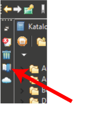

Bookmarks view
The Bookmarks view contains a list of all
bookmarks. It can be opened with a single click on its icon in the Fast View Bar (top left).

Double clicking one of its entries navigates to the location
where the bookmark was created.
To sort the entries please click the title bar above the table columns.
View actions and Context functions
- Go to bookmark. Same as double click - navigate to the bookmark position.
- Delete bookmark Removes the bookmark from the list.